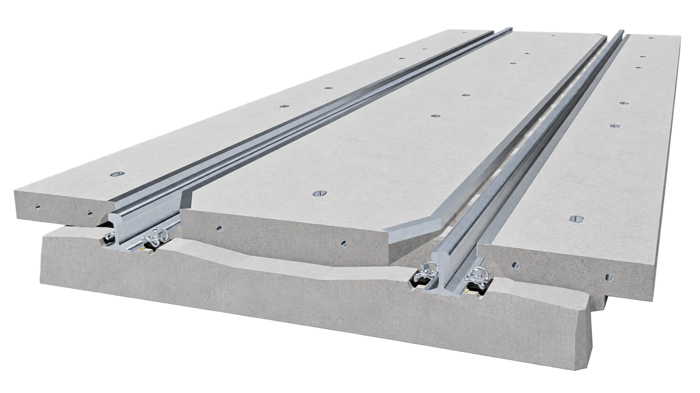
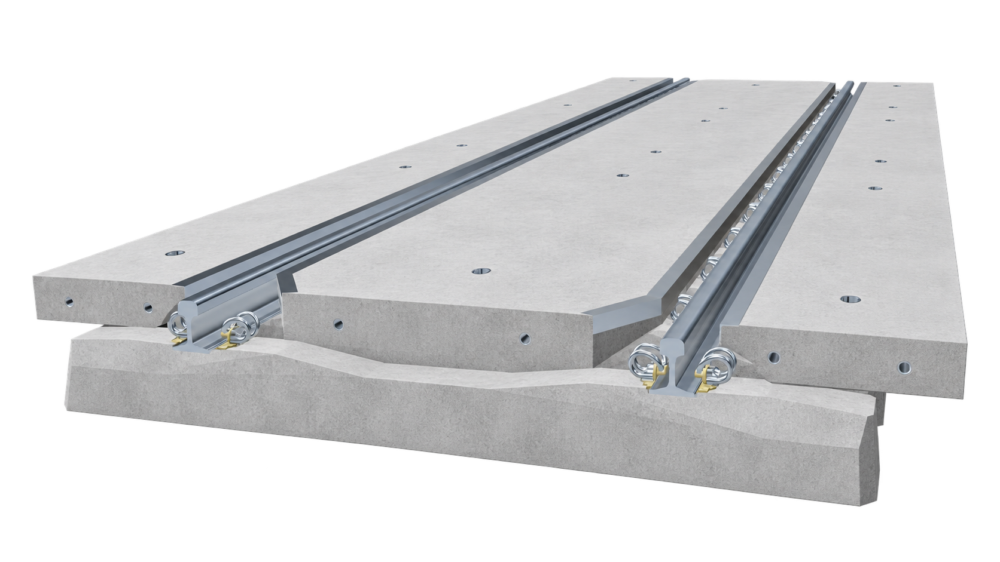
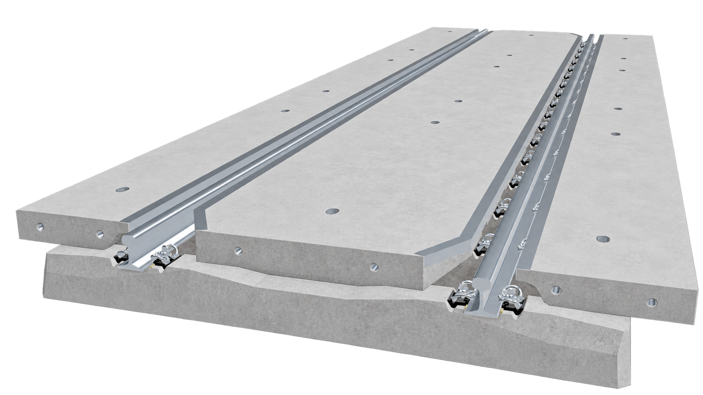

3D model not availableLevel crossing panel LCP-1
Standard modular panel for road and pedestrian level crossings on conventional railway lines.
Mass620 kg
Length2500 mm
Width1200 mm
Height180 mm
Track gauge1435 mm

3D model not availableStandard modular panel for road and pedestrian level crossings on conventional railway lines.

3D model not availableReinforced modular panel designed for level crossings exposed to frequent heavy road traffic.

3D model not availableCompact modular panel for service roads, industrial sidings and level crossings with limited installation space.